To control and monitor the AFD there is an X11 interface, which can be
called via afd_ctrl. It can take the following parameters:
-w <work_dir>
-p <user profile>
-u[ <fake user>]
-no_input
-f <numeric font name>
-t <title>
-bs
It needs to know in which directory AFD is running. Usually it gets
this information via AFD_WORK_DIR environment. If not set you can set
this via -w <work dir>. When there more then one user monitoring
this AFD it can be helpful if each user can have its own profile. This
can be done with -p <user profile>. The profile name can be any
string, but it is a good if it tells which user it is because any changes
will be logged under this name. Good example could be donald@work or
donald@home. This way Donald can keep different font settings for his
home and work computer and one can see from where he committed any changes.
For the option -u[ <fake user>] please see documentation in
AFD_CONFIG. If you want a dialog
without any controls you can start it with the -no_input parameter.
The font size can be changed via -f <numeric font name>. The
title can be set with -t <title>. Some X servers have a broken
backing store implementation. By default afd_ctrl uses backing store.
This can be turned off with the -bs option.
The afd_ctrl dialog has the following appearance:
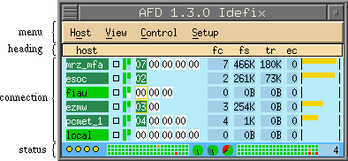
As shown this dialog is divided into four main areas: menu, heading, connection
and status.
The menu area has five pull down buttons: Host, View, Control and Setup.
If your afd_ctrl window does not have all buttons shown and described here,
then the system administrator did not allow you to use this function,
see afd.users for more details.
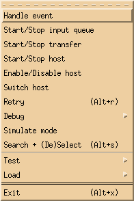
| Handle event |
This allows one to acknowledge an error situation, put an
error situation offline or unset the acknowledge and/or offline
setting. You must select one or more host to get the
handle_event popup. In the reason text field one can enter
a reason which will then show up in the event log via the
show_elog dialog. Acknowledging
an event means that the destination alias field now becomes
pink (). If the
host is put offline it will turn Steelblue
() and errors and
warnings will be marked as offline in the logs. If one
knows in advance the time when a host is offline, you can
do so by enabling 'Time frame' and entering time values at
'Start time' and 'End time'. The format can be one of the
following: MMDDhhmm, DDhhmm or hhmm. |
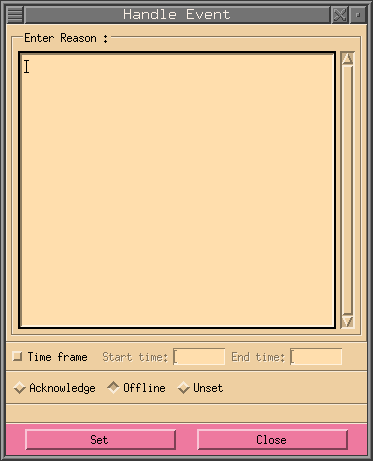 |
| Start/Stop input queue |
Allows you to start or stop the queue of one or more selected
hosts. When the queue is stopped the queue led turns brown.
Stopping the queue means that AFD internally will not generate
any messages, but no data is lost either. All current jobs that
have a message will still be transmitted. |
|
| Start/Stop transfer |
Allows you to start or stop
the transfer of one or more selected hosts. When the transfer
is stopped the transfer led will be orange. Stopping the
transfer means that messages are still being generated, but the
FD will not distribute the files. Care should be taken when
choosing this option. Watch the job queue number so it does
not reach a critical stage. Use Start/Stop queue if lots of
files are being distributed for this host. |
|
| Start/Stop host |
Allows you to start or stop a host. Stopping a host means stopping
transfer and queue, but no data will be lost. If the data is not
required, press Enable/Disable host below. In case the queue or
transfer is already stopped and you then press this button it
will respectively close the transfer or queue. When the queue is
stopped the queue led turns brown and the transfer led will be
orange. |
|
| Enable/Disable host |
When you want to stop a host and do not want to collect the
data for it, disable it by pressing this button. NOTE: All
current jobs for this host will be deleted when disabling
a host. |
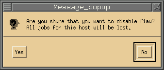 |
| Switch host |
Switch host allows to change the destination address of
selected host. To see whether a certain host has a secondary
address look in afd_info dialog. |
|
| Retry |
Retry can only be used when there are jobs queued by FD for
this host and you would like AFD to immediately try and send
the files. This is useful in error situation when the
error condition has been fixed and you do not want to wait
for the next scheduled retry by AFD. |
|
| Debug |
| Debug |
This enables or disables normal
debugging for the given host. With this enables you can see
step by step what is being done. To watch the output the
Transfer Debug Log
button. The contents of the debug log is described in
Log Files. |
| Trace |
With this you enable a lot more debug output, each command
send and its reply from the remote partner is shown. This
can be quit CPU intensive and the log files grow very
quickly, so don't leave this on for to long. This is the
reason why this only works with the extra process
sf_xxx_trace. |
| Full Trace |
This is the same as Trace only with this set you will
be able to see the contents of the file that is being
transmitted. This will be more CPU intensive if the
files being transmitted are large. |
|
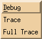 |
| Simulate mode |
The transfer for the selected host will be simulated. No data
is send or retrieved. All data and commands are sent to
/dev/null, so data is lost if this is enabled. |
| Search + (De)Select |
This allows to search for a given host (alias and real) name,
with wild cards, when selecting search type Hostname. If instead
Information is selected as search type, it will search the
host information file(s) for the
given information. The found hosts will then be selected. |
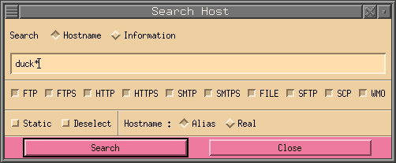 |
| Test |
Test the connection to the selected host. Two tests are
possible, ping and traceroute. To make these visible you
must configure PING_CMD
and/or
TRACEROUTE_CMD in AFD_CONFIG file. |
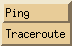 |
| Load |
Load shows the current load of either: Files send per second,
KBytes send per second, Connections done per second and the number
of Active-Transfers. |
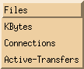 |
| Exit |
Exit will close the afd_ctrl window and all other windows that
have been started from this dialog. It does not effect any of
the main process of the AFD running in the background. |
|
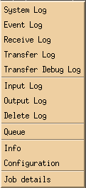
| System Log |
System Log opens the system
dialog. See Log Files for
a more detailed description of the output. |
| Maintainer Log |
Maintainer Log opens the maintainer
dialog. See Log Files. |
| Event Log |
Event Log opens the event
dialog. See Log Files for
a more detailed description of the output. |
| Receive Log |
Receive Log opens the receive dialog
See Log Files for a more
detailed description of the output. |
| Transfer Log |
Transfer Log opens the transfer dialog.
See Log Files for a more
detailed description of the output. When one or more hosts
where selected the output shown will only show data of these
hosts. |
| Transfer Debug Log |
Transfer Debug Log opens the
transfer debug dialog. See
Log Files for a more detailed description of the output. When
one or more hosts where selected the output shown will only show
data of these hosts. |
| Input Log |
Input Log opens the input dialog.
See Log Files for a more
detailed description of the output. |
| Production Log |
Production Log opens the production
dialog. See Log Files
for a more detailed description of the output. |
| Output Log |
Output Log opens the output dialog.
See Log Files for a more
detailed description of the output. If one or more hosts are
selected, these will be entered in Recipient field of the
dialog. |
| Delete Log |
This opens the delete dialog. See
Log Files for a more detailed
description of the output. If one or more hosts are selected,
these will be entered in Recipient field of the dialog. |
| Queue |
Queue opens the queue dialog. Here
you can see all files being queued by AFD. |
| Info |
The Info button opens the afd_info
dialog for this host. |
| Configuration |
Shows the DIR_CONFIG configuration of the selected host. |
| Rename rules |
Shows all rename rules. |
| Job details |
This closes and opens the
Job details dialog when jobs are selected. |
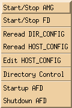
| Start/Stop AMG |
This starts or stops the AMG. Stopping the
AMG means that no more messages will be generated for the FD. FD
will continue distributing as long as there are files queued. |
| Start/Stop FD |
This starts or stops the FD. Stopping the FD
should only be done for a short time on systems with lots of
traffic. Otherwise the AMG keeps generating messages until
the file system is full or it cannot create any new directories to
store the files. |
| Reread DIR_CONFIG |
When there have been any changes made in the
DIR_CONFIG file and these changes
should be activated, press this button. If there where any changes
in the HOST_CONFIG file it will incorporate these changes as well.
So it is not necessary to press the Reread HOST_CONFIG button. |
| Reread HOST_CONFIG |
To activate changes made by editing the
HOST_CONFIG file manually
(not using the edit_hc dialog),
press this button. When you use edit_hc
dialog to make changes to the HOST_CONFIG it will not be necessary
to press this button, the Update button of that dialog will
perform this task. |
| Edit Host |
Opens the edit_hc dialog, where
you can make changes to each host shown by the afd_ctrl dialog.
If a host has been selected this will then be the selected host
when edit_hc dialog starts. |
| Directory Control |
This button shows the dir_ctrl dialog, which shows all directories
monitored by AFD. |
| Startup AFD |
Starts the AFD by starting init_afd which in turn will start
all process necessary for AFD to run. |
| Shutdown AFD |
Will do a shutdown of AFD. |
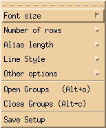
| Font size |
Pressing Font size will give you a list of fonts which,
when selected, will be used for the afd_ctrl window and all other
windows called from it. It might be that your X server does
not support all fonts shown on the right hand, then you will
be shown less fonts. |
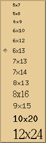 |
| Number of rows |
Number of rows allows to change the maximum number of rows
to be displayed for one column. |
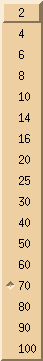 |
| Alias length |
Alias length allows to change the length of the alias name
displayed. |
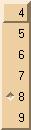 |
| Line Style |
Line Style allows to change the appearance of a single line.
You can currently choose four different items: Leds, Process,
Characters and Bars. Default will be that all four items will
be visible. If you do have a very large number of hosts you can
deselect some items to reduce the window size of the afd_ctrl
dialog. |
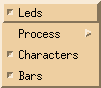 |
| |
Process can be viewed in Normal mode, that looks as
follows: or in Compact mode .
Or one can leave the process completely away (None). |
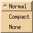 |
| Other options |
Other options has the option 'Force shift select'.
Normally one can select a line by just pressing that line with
the left mouse button. This can however lead to accidentally
pressing a line and one can force the user to use the shift
button together with the left mouse button to select a line.
'Auto save' will save the settings as soon as you exit the
dialog. 'Framed groups' will make a black frame around a
group line to make groups more visible. |
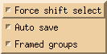 |
| Open Groups |
Open Groups will open all groups. |
|
| Close Groups |
Close Groups will close all groups. |
|
| Save Setup |
Save Setup will save the above settings in the file
.afd_ctrl.setup.@. in the users home
directory. So when you start afd_ctrl again it will start with
these settings. |
|
The heading is just a quick reminder of what the fields in the
connection area mean:
| dest |
The destination alias where the files are being distributed to. |
| fc |
This is the file counter field. It shows the total number files that
are still to be distributed for this destination. |
| fs |
The total file size that is still to be distributed. |
| tr |
Shows the overall current transfer rate. |
| ec |
This is the error counter for this destination. |
The connection area is the actual area which monitors and controls the AFD.
The meaning of each field is shown below:
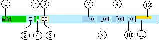
| 1 |
Destination alias |
This field holds the name of the
destination alias. The background color indicates the current status
of the connection:
|
No transfer. Waiting for files to come. |
|
Transfer active. Files are currently being transferred. |
|
Errors acknowledged. Files cannot be transmitted. |
|
Errors/Warnings offline. Files cannot be transmitted.
Error and warnings have been put offline. |
|
Error. Files cannot be transmitted. It turns red when the error
counter has reached the value set in the
HOST_CONFIG file. |
|
There is no entry of this host in the DIR_CONFIG. |
|
This host is disabled. All files in the input directories for
this host will be deleted. |
|
| 2 |
Debug Led |
This indicates if debug is enabled for
this destination or not. The colors can be one of the following:
|
Normal status, no debugging set. |
|
Normal debugging. Just shows what commands are send. |
|
Trace debugging. This shows a lot more information. Full
details of all commands and replies are shown on protocol
level. |
|
Full Trace debugging. Same as Trace, just that now the
content of the file is shown as well. Do not set this
when sending big files. However, with SMTP you must set
this if you like to see the full mail header. |
Do not let debug on for very long on high traffic connections. Since
this means lots of data gets written to the log file. See
Log Files for more
information of the debug output. |
| 3 |
Queue Led |
The color of this LED tells what the AMG will
do when files arrive for this destination.
|
Normal status. Messages will be generated for the FD. |
|
There are jobs in the error queue. Further jobs, which are in
the error queue, will be held back once a certain number have
been queued. |
|
Queue stopped by user. Files for this host are saved in a
a separate directory and no messages are generated. |
 |
Queue stopped automatically. Files for this host are saved in a
a separate directory and no messages are generated. |
|
| 4 |
Transfer Led |
This LED is split in two half's. The top
half is for output and the bottom part is input. The color tells the
status of this which can be one of the following:
|
Normal status, retrieve not configured. Files will be
distributed by the FD. |
|
Normal status, retrieve disabled. Files will be
distributed by the FD. |
 |
Normal status, distribution not configured. Files will be
retrieved by the FD. |
 |
Normal status. Files will be retrieved and distributed by the
FD. |
|
Distribution stopped, retrieve not configured. No files will
be distributed. |
|
Distribution stopped, retrieve disabled. No files will
be distributed. |
|
Retrieve stopped, distribution not configured. No files will
be retrieved. |
 |
Transfer stopped by user. No files will be distributed. |
|
No distribution configured, retrieve disabled. |
|
No retrieve or distribution configured. |
|
No retrieve or distribution will be done. Distribution of files
will just be simulated. Data will be written to /dev/null. |
|
No retrieve or distribution will be done. Fetching of files
will just be simulated. Data will be written to /dev/null. |
|
No retrieve or distribution will be done. Distribution and
fetching of files will just be simulated. Data will be
written to /dev/null. |
|
| 5 |
Detailed Selection |
Shows all details for this job, see
Job Details. |
| 6 |
Connection |
This field shows the number of files currently
being transferred for this host. The background color indicates the
current status of the process.
|
Normal status. No transfer is active for this process. |
|
FTP Connecting Phase. This includes making the connection
to the remote FTP-server, setting transfer mode and sending
user name and password. |
|
FTP Transfer active. There are still two files to be transferred. |
|
FTP Bursting. During an active transmission two more files have
arrived, these have been appended to the current transfer job. |
|
SCP Transfer active. There are still two files to be transferred. |
|
SFTP Transfer active. There are still two files to be transferred. |
|
SFTP Bursting. During an active transmission two more files have
arrived, these have been appended to the current transfer job. |
|
SFTP fetch active. There are still two files to be fetched. |
|
Closing Phase. This includes removing any lock files and
closing the connection to the remote server. This is valid
only for FTP, SFTP and HTTP. |
|
Local transfer active. There are still two files to be copied. |
|
Local Bursting. During an active transmission two more files have
arrived, these have been appended to the current transfer job. |
|
Mail transfer active. There are still two files to be mailed. |
|
Mail Bursting. During an active transmission two more files have
arrived, these have been appended to the current transfer job. |
|
WMO transfer active. There are still two files to be send via
TCP/IP socket. |
|
WMO burst transfer active. During an active transmission two
more files have arrived, these have been appended to the current
transfer job. |
|
Execution phase after the file was distributed. This
phase is only reached when the
pexec options is used. |
|
Error. An error has occurred while trying to distribute files. |
|
| 7 |
File Counter |
Total number of files that still have to be send for this
destination. The numbers will be shown up to 9999 files, after
this a character will be added: m for Mega Files (1000 * 1000 files),
g for Giga Files (1000 * 1000 * 1000 files), t for Tera Files (1000 *
1000 * 1000 * 1000 files), p for Peta Files (1000 * 1000 * 1000 *
1000 * 1000 files) and e for Exa Files (1000 * 1000 * 1000 * 1000 *
1000 * 1000 files). |
| 8 |
File Size |
Total number of bytes that still have to be send for this destination.
The last character always shows the current unit: B for Bytes, K for
Kilo Bytes (1024 Bytes), M for Mega Bytes (1024 * 1024 Bytes), G for
Giga Bytes (1024 * 1024 * 1024 Bytes), T for Tera Bytes (1024 * 1024 *
1024 * 1024 Bytes), P for Peta Bytes (1024 * 1024 * 1024 * 1024 *
1024 Bytes) and E for Exa Bytes (1024 * 1024 * 1024 * 1024 * 1024 *
1024 Bytes). |
| 9 |
Transfer Rate |
Displays the total current transfer rate of all connections to this
destination. |
| 10 |
Error Counter |
Number of errors that occurred for this destination. This will always
be reset to zero when a file has been distributed successfully. If
the number of errors is larger then two digits a greater sign (>)
will be displayed. |
| 11 |
Error Counter Bar |
Displays a bar for the number of errors for this destination. The
color of the bar will be green when the error counter is low and
will increasingly turn red the larger the error counter becomes. |
| 12 |
Transfer Rate Bar |
Displays a yellow bar to display the transfer rate to this
destination graphically. |
Selecting can be done by either holding down the shift key and pressing the
left mouse button (temporary selection) or by holding the ctrl key and the
left mouse button (permanent selection). The background of the line will
change to black or grey respectively.
Pressing the right mouse button in the connection field will open the
following popup and the following actions can be chosen from for
selected lines:
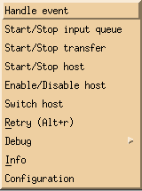
| Handle event |
This allows one to acknowledge an
error situation, put an error situation offline or unset the
acknowledge and/or offline setting. You must select one or more
host to get the handle_event popup. In the reason text field one
can enter a reason which will then show up in the event log via
the show_elog dialog. Acknowledging
an event means that the destination alias field now becomes
pink (). If the
host is put offline it will turn Steelblue
() and errors and
warnings will be marked as offline in the logs. |
|
| Start/Stop input queue |
Allows you to start or stop
the queue of one or more selected hosts. When the queue is stopped
the queue led turns brown. Stopping the queue means that AFD
internally will not generate any messages, but no data is lost
either. All current jobs that have a message will still be
transmitted. |
|
| Start/Stop transfer |
Allows you to start or stop
the transfer of one or more selected hosts. When the transfer
is stopped the transfer led will be orange. Stopping the transfer
means that messages are still being generated, but the FD will not
distribute the files. Care should be taken when choosing this
option. Watch the job queue number so it does not reach a critical
stage. Use Start/Stop queue if lots of files are being distributed
for this host. |
|
| Start/Stop host |
Allows you to start or stop a host.
Stopping a host means stopping transfer and queue, but no data
will be lost. If the data is not required, press Enable/Disable
host below. In case the queue or transfer is already stopped and
you then press this button it will respectively close the transfer
or queue. When the queue is stopped the queue led turns brown and
the transfer led will be orange. |
|
| Enable/Disable host |
When you want to stop a host and do
not want to collect the data for it, disable it by pressing
this button. NOTE: All current jobs for this host will be deleted
when disabling a host. |
|
| Switch host |
Switch host allows to change the
destination address of selected host. To see whether a certain
host has a secondary address look in
afd_info dialog. |
|
| Retry |
Retry can only be used when there are jobs
queued by FD for this host and you would like AFD to immediately
try and send the files. This is useful in error situation when the
error condition has been fixed and you do not want to wait
for the next scheduled retry by AFD. |
|
| Debug |
| Debug |
This enables or disables normal debugging for the given
host. With this enables you can see step by step what
is being done. To watch the output the
Transfer Debug Log
button. The contents of the debug log is described in
Log Files. |
| Trace |
With this you enable a lot more debug output, each command
send and its reply from the remote partner is shown. This
can be quit CPU intensive and the log files grow very
quickly, so don't leave this on for to long. This is the
reason why this only works with the extra process
sf_xxx_trace. |
| Full Trace |
This is the same as Trace only with this set you will
be able to see the contents of the file that is being
transmitted. This will be more CPU intensive if the
files being transmitted are large. |
|
|
| Info |
The Info button opens the afd_info
dialog for this host. |
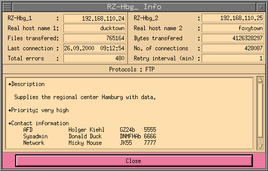 |
| Configuration |
Shows the DIR_CONFIG configuration of the selected host. |
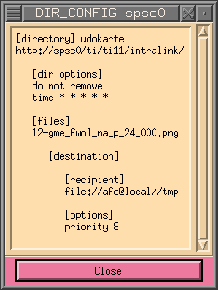 |
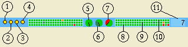
| 1 |
AMG |
LED to show current status of process AMG (Automatic Message
Generator).
|
Normal status. Process is up and running. |
|
Process has terminated normally. |
|
Abnormal termination. Process has been killed and is
not running any more. |
NOTE: This LED must be so
that the AFD can function properly.
|
| 2 |
FD |
LED to show current status of process FD (File Distributor).
|
Normal status. Process is up and running. |
|
Process has terminated normally. |
|
Abnormal termination. Process has been killed and is
not running any more. |
NOTE: This LED must be so
that the AFD can function properly.
|
| 3 |
Archive Watch |
LED to show current status of process Archive Watch.
|
Normal status. Process is up and running. |
|
Process has terminated normally. |
|
Abnormal termination. Process has been killed and is
not running any more. |
|
| 4 |
AFDD |
LED to show current status of process AFDD. This might be missing
if you did not set the
AFD_TCP_PORT option in the AFD_CONFIG file.
|
Normal status. Process is up and running. |
|
Process has terminated normally. |
|
Abnormal termination. Process has been killed and is
not running any more. |
|
| 5 |
Receive Log |
Radar that shows the five last type of messages in the
receive log.
| Color |
Log Symbol |
Description |
|
<I> |
Information, nothing serious. |
|
<W> |
Warning. Processing of data on input or warnings about
old files in directory where there is no rule to distribute
these. |
|
<E> |
Error is encountered during processing of data. |
 |
<F> |
A fatal error has occurred, the process involved has most
properly terminated abnormally. |
|
| 6 |
System Log |
Radar that shows the five last type of messages in the
system log.
It can have the following colors:
| Color |
Log Symbol |
Description |
|
<I> |
Information, nothing serious. |
|
<C> |
Configuration, something has been configured. |
|
<W> |
Warning. Most properly a configuration error, nothing to
be nervous about. |
|
<E> |
Error, AFD should still be able to continue, but something
is wrong! |
|
<F> |
A fatal error has occurred, the process involved has most
properly terminated abnormally. Now you should really be
nervous! |
 |
<#> |
Dummy sign. Is used for showing a new month in the system
log or when there is garbage or no information in the log
file. |
|
| 7 |
Transfer Log |
Radar that shows the five last type of messages in the transfer log.
| Color |
Log Symbol |
Description |
|
<I> |
Information, nothing serious. |
|
<W> |
Warning. A file could for example not be renamed because it
already existed. |
|
<E> |
Error. File could not be transmitted, see the log for more
details. |
|
<F> |
A fatal error has occurred, the process involved has most
properly terminated abnormally. |
|
| 8 |
Transfer Log History |
Depending on the width of the afd_ctrl window, this will show the
last 48 hours of what has happened in the transfer log. It shows
the current hour on the right hand side and will move one position
to the left every hour. Each square represents one hour and the color
will be always the one with the highest severity that has occurred
during that hour. The order is as follows, starting with the
highest severity: Fatal ,
Error , Warn
and Info
. |
| 9 |
System Log History |
Same as above only for the system log and that it will have more
colors. The order of the colors here is as follows, again starting
with the highest severity: Fatal , Error ,
Warn , Config
, Info
and Dummy (date, etc)
|
| 10 |
Receive Log History |
See Transfer Log History above. |
| 11 |
Job Queue Counter |
This counter shows how many jobs are currently being queued. |
The job details can be viewed by clicking with the right mouse button and
holding the Ctrl button simultaneously when the mouse cursor is on a
connection field. It shows a more
detailed view of what the current job is doing. If all data has been
transmitted the rotating dash in the center will go away. To make a very
long file name visible you can make this window longer by putting the
cursor into the job details window and simultaneously press the Ctrl
button and press the right mouse button. The left mouse button will make
it shorter.
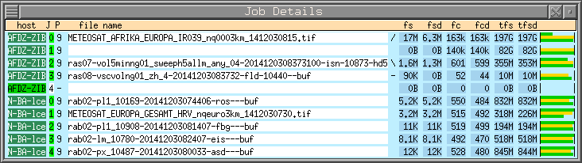
![[red dot]](../images/reddot.gif)